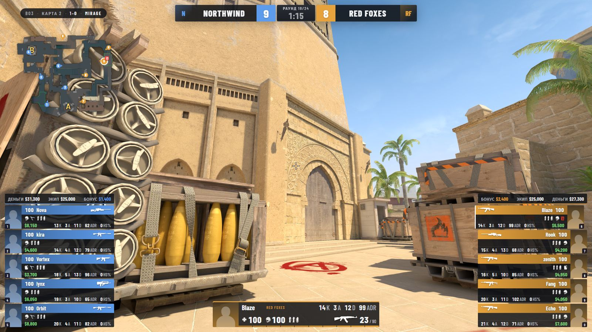
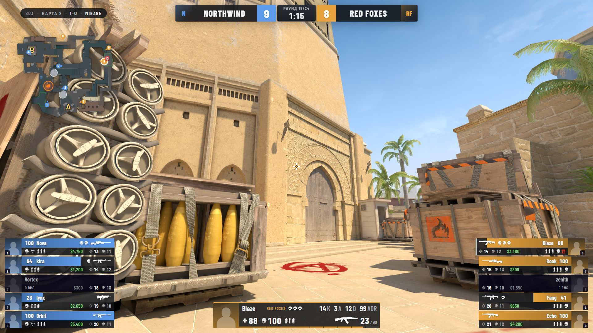
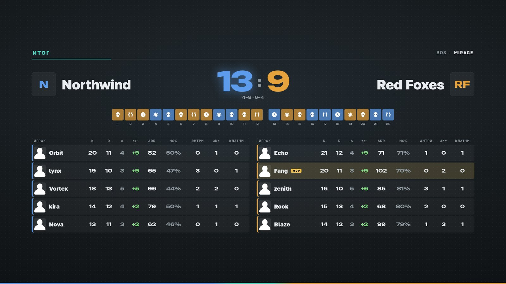

Эфир турнира, который не стыдно показать
Freezetime Cast собирает трансляцию матча CS2 за вас: HUD, автокамера, повторы, статистика и сцены OBS. Достаточно одного человека за компьютером в клубе.
3 дня эфира без ограничений, карта не нужна
Обычно на эфир турнира нужны обсервер, режиссёр и монтажёр. У вас это одна программа и один человек, который следит, чтобы всё шло.
Что видит зритель

- Счёт и время раундаСчёт, номер раунда, таймер бомбы и разминирования.
- Мини-картаИгроки, бомба, гранаты — всё на своих местах в реальном времени.
- Составы командЗдоровье, броня, оружие, деньги и фраги каждого игрока. Аватарки и логотипы — ваши.
- Игрок в кадреСтатистика того, за кем следит камера: убийства, урон, патроны.
- СерияФормат матча, номер карты и счёт по картам.
Что программа делает за вас
Каждую из этих задач на больших турнирах делает отдельный человек. Здесь их берёт на себя программа, а оператор только следит и вмешивается, если хочет.
автокамера
Камера сама находит драку
Переключается на игрока, у которого сейчас решается раунд: перестрелка, клатч, разминирование. Можно перехватить управление в любой момент.
повторы
Повтор лучшего момента — без монтажа
Мульти-килл или клатч сам попадает в повтор после раунда. Или по клавише F4 — последние секунды прямо сейчас.
сцены
Сцены меняются сами
Игра, перерыв, статистика в конце половины и карты. Программа сама создаёт сцены в OBS и следит, чтобы ничего не отвалилось.
HUD
Логотипы, цвета и спонсоры — ваши
Нейтральный HUD в цветах игры, а под ваш клуб — ваши цвета, логотип и спонсоры. Названия команд сокращаются сами и не вылезают за рамки.
сетка
Сетка турнира без своего сайта
Олимпийка, double elimination, группы или швейцарка — команды из списка, счёт вносится в программе, победитель сам проходит дальше. Сетка — отдельной сценой на трансляции, а матч одной кнопкой встаёт в HUD.

От установки до эфира
Установили
Обычный установщик для Windows. Ключ и регистрация не нужны.
Программа настроила всё сама
Находит CS2 и OBS, ставит конфиги, создаёт сцены. Вы нажимаете «Исправить».
Подключились к матчу
К вашему серверу напрямую или к любому матчу через GOTV.
Эфир
Запускаете стрим в OBS — дальше камера, HUD и повторы работают сами.
Тарифы
Подписка помесячно, отменить можно в любой момент. За год сразу — на 20% дешевле.
Первым клубам — три месяца за полцены, если разрешите показать ваш эфир на этом сайте и расскажете, что мешало.
| Что входит | Цена | |
|---|---|---|
| Пробный | Все возможности на 3 дня эфира. День засчитывается, только когда программа ведёт живой матч: установка и настройка дни не тратят. После — программа работает дальше, но только с HUD: на эфире водяной знак, без повторов, пролёток, сетки и спонсоров. | 0 ₽ |
| Клуб | Один компьютер: автокамера без лимита часов, повторы, пролётки, статистика, сетка турнира, сцены OBS. Эфир в нашем HUD; ваши цвета, логотип и спонсоры — в пакете «HUD под бренд». Обновления и поддержка в Telegram. | 2 490 ₽в месяц |
| Организатор | Всё из «Клуба» на трёх компьютерах, плюс редактор HUD: свои цвета, расположение блоков, переход и спонсоры. Поддержка в первую очередь, перед турниром удалённо проверим и настроим эфир вместе с вами. | 5 990 ₽в месяц |
| HUD под брендк любой подписке | 7 000 ₽ — наш HUD, перерыв, переходы и статистика в цветах вашего клуба, с вашим логотипом и спонсорами: присылаем файл, он встаёт в программу одной кнопкой. от 35 000 ₽ — свой дизайн с нуля: рисуем и согласуем с вами новый вид HUD, перерыва и переходов, потом программируем его. Две правки входят, оформление обновляется вместе с программой. | от 7 000 ₽разово |
Вопросы
Что нужно для работы?
Windows 10 или 11, CS2 и OBS Studio на компьютере трансляции. HLAE программа поставит сама: через него работают автокамера, повторы и пролёты. Игра и стрим идут на одном компьютере, поэтому требования выше, чем просто для CS2:
| Минимум · 720p 60 к/с | Для 1080p 60 к/с | |
|---|---|---|
| Процессор | 4 ядра, 8 потоков: Core i5-9400F, Ryzen 5 2600 | 6 ядер, 12 потоков: Core i5-12400F, Ryzen 5 5600 |
| Видеокарта | GTX 1650 Super, 4 ГБ | RTX 2060 / 3050 и новее, 6 ГБ+ |
| Память | 16 ГБ | 16 ГБ в двух планках |
| Диск | CS2 на SSD и ещё 20 ГБ свободно | CS2 на SSD и ещё 50 ГБ свободно (повторы и запись эфира) |
| Интернет | отдача от 6 Мбит/с | отдача от 10 Мбит/с, по кабелю |
Видеокарта нужна NVIDIA с кодировщиком NVENC (или Radeon RX 6000 и новее): тогда стрим кодирует видеокарта, а процессор остаётся игре. В OBS выберите кодировщик NVENC, в CS2 ограничьте FPS (fps_max 144) — так эфир не будет дёргаться.
Как программа попадает на матч?
Компьютер трансляции не играет, а смотрит матч. Есть два способа:
Свой или арендованный сервер. Добавьте в параметры запуска сервера -insecure — программа зайдёт на него наблюдателем, и эфир пойдёт без задержки. Без этого параметра сервер её не пустит: CS2 для эфира запущена через HLAE, а с ним на серверы с VAC не заходят. Игроки подключаются как обычно.
Чужой сервер или турнирная платформа. Программа подключается к GOTV матча — туда пускают и без -insecure. Нужен адрес GOTV от организатора, а эфир будет с задержкой GOTV (её задаёт сервер, от нескольких секунд до 2 минут на турнирах).
Программа встраивается в игру? Меня забанят?
Сама Freezetime Cast в игру не встраивается и память CS2 не читает. Данные о матче — счёт, игроки, деньги, позиции — она получает через GSI: это официальная функция Valve, игра сама отправляет их программе. Так работают все HUD для трансляций. Оверлей — отдельное прозрачное окно поверх игры, OBS управляется через его websocket, а конфиги наблюдателя CS2 выполняет сама, как любой ваш конфиг.
В игру встраивается только HLAE — известный инструмент для съёмки CS2. Программа запускает с ним отдельную копию CS2 с параметром -insecure: VAC в ней выключен, поэтому бана быть не может, а к игре, которая уже открыта, HLAE никогда не подключается. Обратная сторона — с -insecure не зайти на серверы с VAC, поэтому матч смотрят со своего сервера с -insecure или через GOTV (см. «Как программа попадает на матч?»).
Что будет работать без HLAE?
В настройках можно выбрать обычный запуск CS2 через Steam: VAC включён, в игру не встраивается ничего. Тогда работает всё, что идёт через GSI:
- HUD: счёт, игроки, деньги, оружие, радар, бомба;
- статистика в перерыве и после карты;
- сцены OBS и экран перерыва;
- килфид — но приблизительно: программа угадывает убийства по изменениям в данных GSI.
Без HLAE не работает:
- автокамера — GSI только сообщает, что происходит в игре, а переключать игроков программа может лишь командами через HLAE; камеру придётся вести вручную;
- повторы — моменты для них выбираются по точным событиям убийств (кто, кого, чем, на какой секунде), а их присылает HLAE;
- пролёты — это управляемая камера HLAE, у самой игры такой нет.
Что будет после пробного периода?
Пробный период — 3 дня эфира. День засчитывается после 10 минут живого матча, поэтому его хватит на репетицию и настоящий турнир, даже если турнир раз в неделю. Потом программа продолжит работать, но на эфире появится надпись «Пробная версия», а повторы и пролётки отключатся. Чтобы вернуть всё, нужен ключ: он привязывается к компьютеру и работает без интернета.
Антивирус ругается на программу
Windows может предупредить «неизвестный издатель» при установке — нажмите «Подробнее» → «Выполнить в любом случае». HLAE подключается к игре, поэтому некоторые антивирусы его проверяют дольше обычного. Если что-то блокируется — напишите в поддержку.
Не собьёт ли программа мои настройки CS2?
Нет. Перед эфиром программа сохраняет ваши бинды и настройки, а когда игра для трансляции закрывается, возвращает их на место — даже если саму программу закрыли раньше. Если что-то всё же пошло не так, запустите CS2 из Steam и введите в консоли exec broadcast_off: он вернёт ваши значения, сохранённые перед эфиром. Удобнее всего вести эфир с отдельного аккаунта Steam.
Как заказать свой HUD?
Есть три уровня. Свой HUD — от 35 000 ₽, 1–2 недели: рисуем с нуля HUD в игре, а перерыв, переходы и статистика остаются нашими в ваших цветах. Свой эфир — от 55 000 ₽, 2–3 недели: с нуля HUD, экран перерыва, переход и статистика после карты. По заданию — от 80 000 ₽, по смете: всё это и блоки, которых в программе нет, например вето карт или сетка турнира.
Как это идёт: вы присылаете логотип, цвета и пару эфиров, которые нравятся → через 3–5 дней показываем макет поверх настоящего кадра CS2 → две правки входят, каждая следующая 3 000 ₽ → программируем и проверяем на записи матча → оформление само встаёт в программу на вашем ключе. Оплата: половина после обсуждения, половина после согласования макета.
Как обновлять?
Никак — программа обновляется сама. Новая версия скачивается в фоне и ставится, когда вы закрываете программу. Посреди эфира ничего не перезапустится.
Поддержка
Отвечаем в Telegram, во время турниров — быстрее. Если что-то не работает, напишите, что видите на экране, и приложите скриншот: разберёмся вместе. Можем подключиться и настроить всё перед первым эфиром.
- Telegram@freezetimecast
- Скачатьпоследняя версия
- Что новогов последней версии